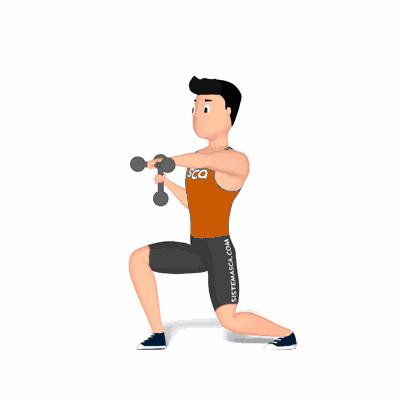

Lunge Punch com Halter

Exercício para fortalecimento muscular e perda de peso. Trabalha vários músculos simultaneamente acelerando o metabolismo.
Ficha Técnica
Tipo: Funcional
Grupo Muscular: Corpo
Aparelho: Nenhum
Músculos: Nenhum
Como realizar
- Na posição em pé;
- Pés afastados na largura dos quadris;
- Segure um dumbbells ou halter em cada mão;
- Posicione os pesos na altura dos ombros com as palmas das mãos voltadas uma para outra;
- Com a perna esquerda dê um passo atrás;
- Flexione os joelhos e empurre o braço esquerdo para fora em um movimento de "perfuração";
- Retorne à posição inicial, realize a sequência prescrita;
- Ao término, repita os movimentos com o braço e perna direta.
 RC STORE
RC STORE